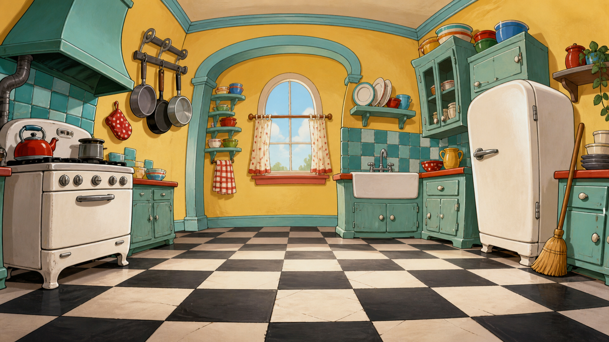
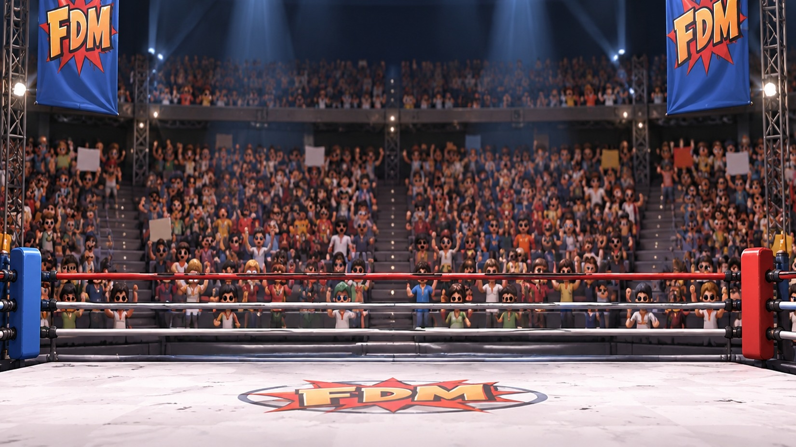

FZO Sport · Speciale impianti15 novembre 2026
Le arene
Dalla cucina più animata del circuito al grande ring FDM: due scenari gratuiti, compatibili con entrambe le app.

Scenario domestico · 16:9
Cartoon Kitchen
Colori caldi, pavimento a scacchi e spazio libero al centro: la cucina predefinita di FDM diventa un'arena personale scaricabile.
Scheda e download
Grande evento · 16:9
Arena Wrestling
Ring, luci e pubblico delle grandi occasioni: lo scenario predefinito di FDM-RR è disponibile per entrambe le app.
Scheda e downloadI pacchetti sono preparati nel formato standard `.fdmarena` definito dalle funzioni di esportazione FDM/FDM-RR. Le immagini mostrate sono le stesse contenute negli asset predefiniti correnti.